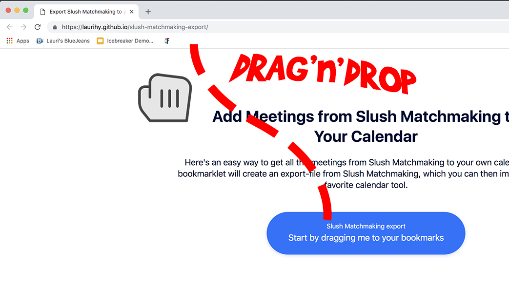
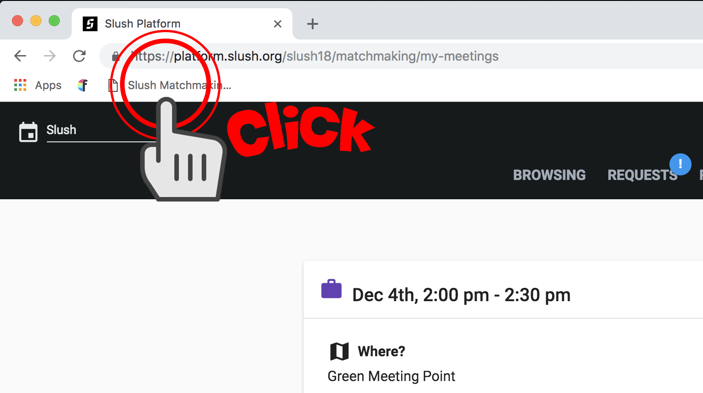
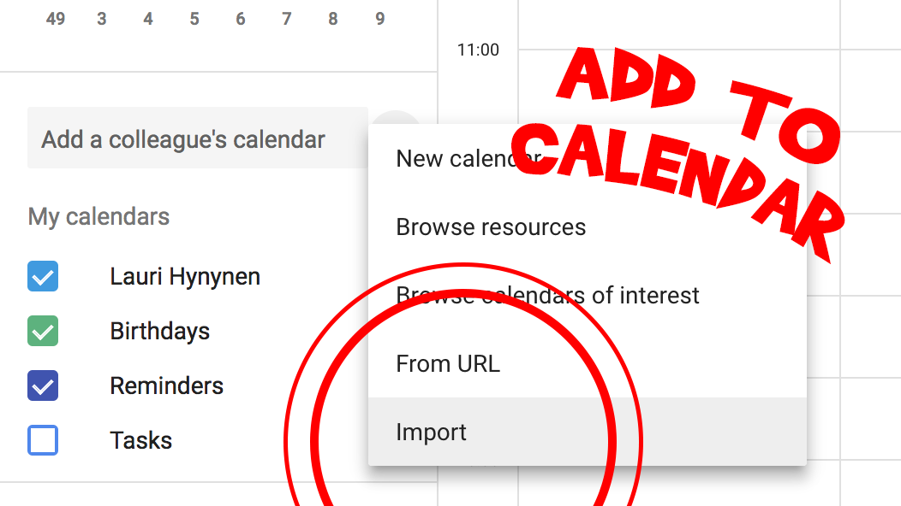

An easy way to export all your Slush Matchmaking meetings, and import those into your favorite calendar tool.
Slush Matchmaking exportStart by dragging me to your bookmarksDrag & Drop it to your bookmarks
Navigate to the list of all your meetings.
You can easily import the file to your calendar
This project is in no way affiliated with Slush organizers. Made by @laurihy